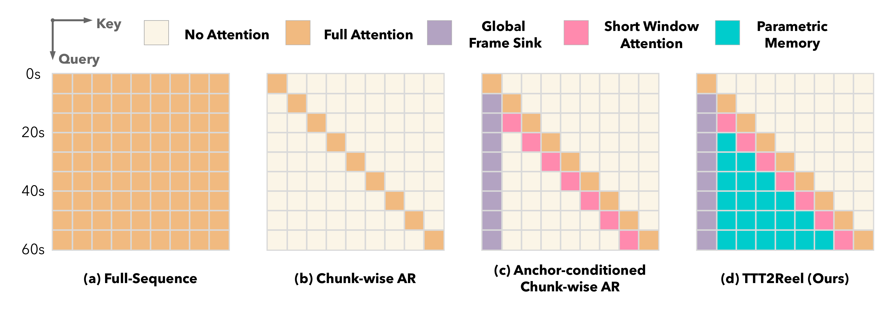
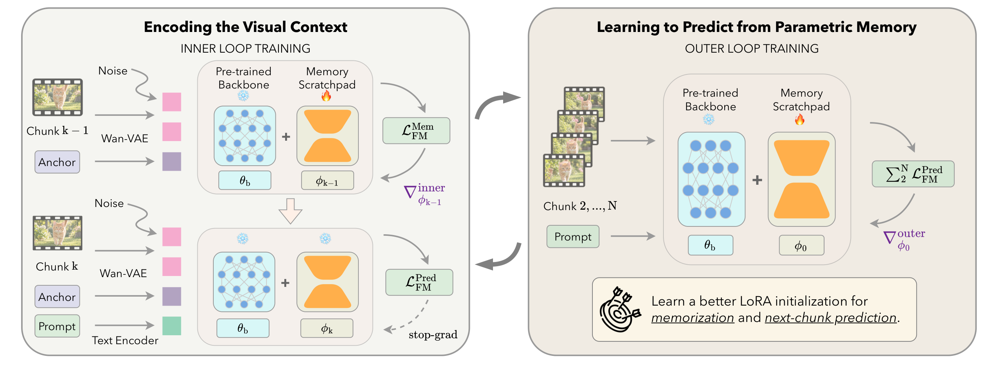
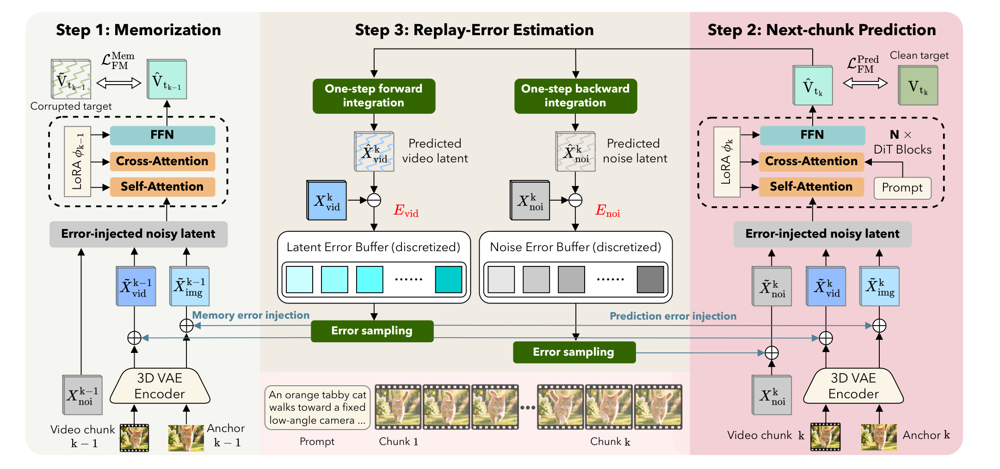
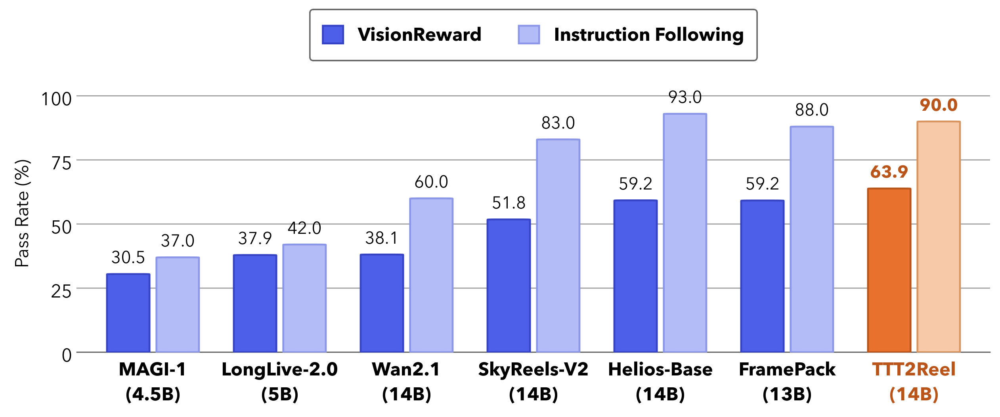
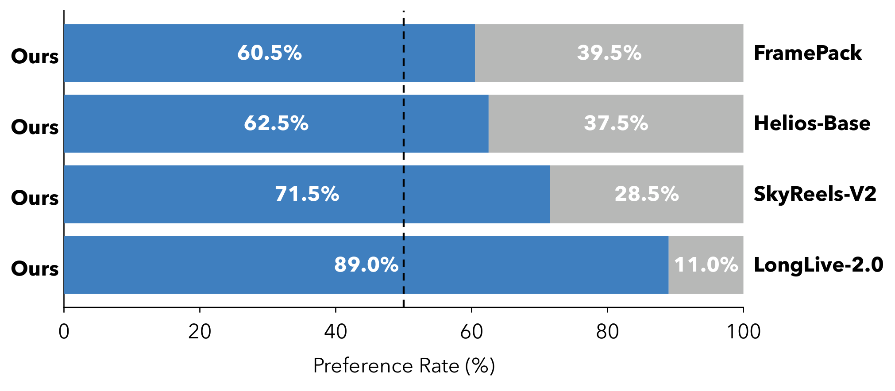

Long Video Generation | Parametric Memory | Bi-Level Optimization
TTT2Reel: End-to-End Test-Time Training for
Long Video Generation
Paper under double-blind review
Under review as a conference paper at ICLR 2027
Generating long, coherent videos from text is fundamentally a memory problem because long-range coherence depends on more visual context than a model can affordably accommodate within its context window. Existing methods store past visual context as re-injected frames or latents, or as cached features, but both representations have limited capacity. We present TTT2Reel, an end-to-end test-time training framework for chunk-wise autoregressive long video generation. Before generating the next chunk, the model actively memorizes the preceding chunk and preserves information useful for next-chunk prediction in lightweight LoRA modules, which serve as a parametric memory of prior visual context. The pipeline is trained end to end using bi-level optimization, where the inner loop mirrors the test-time memory-encoding process and the outer loop minimizes the sum of next-chunk prediction losses across the entire video. To withstand compounding errors in self-generated context at inference, we adapt error-replay training to our bi-level setting by estimating model-dependent residuals online and replaying them into both the memorization and prediction steps. Experiments on minute-long video generation show that TTT2Reel achieves the best overall balance across diverse evaluation dimensions, producing highly dynamic videos while preserving strong visual consistency.
A two-minute video generated by TTT2Reel on Wan2.1-I2V-14B. Prompt: “clown fish swimming through the coral reef.”
Why It Matters
Long-video generation is a memory problem
A three-minute 720p clip at 24 FPS contains more than a million visual tokens, making it impractical for a single denoising pass to attend to the entire sequence. Generating coherent long videos therefore requires a way to retain history beyond a finite context window.
Existing memory representations are capacity-bounded
Prior work stores the past in input space through re-injected frames or latents, or in feature space through cached features. Both preserve only the information that survives compression into a few frames or a fixed-size cache.
Autoregressive rollouts amplify errors
Models trained with clean, ground-truth context must condition on their own imperfect outputs at inference. This train–test mismatch compounds across chunks, causing appearance drift, background changes, motion discontinuities, and forgotten events.
Our answer: learn to memorize in parameter space
TTT2Reel actively memorizes the preceding chunk and preserves information useful for next-chunk prediction in lightweight LoRA parameters. The resulting memory carries history across chunks without expanding the input context or cache, while error replay improves robustness to self-generated context.
Demo Preview
Play speed:
One-Minute Video Rollouts
60-second videos generated by TTT2Reel using Wan2.1-I2V-14B as the backbone model.
A white motorboat speeds across deep blue open water on a bright, clear day. Its bow lifts slightly as it planes over the surface and a long V-shaped wake of white foam churns out behind the stern, catching the sunlight, [...].
A honeybee with golden fuzz and translucent wings crawls across a comb of hexagonal cells in bright sunlight. Its legs step over the wax, its antennae twitch, and it dips its head into a cell as other bees clamber around it in a slow purposeful bustle, [...].
A milky turquoise river braids through a wide grey gravel canyon below a glacier. The channels twist and merge as the fast water rushes over stones and throws up small white crests, mist rises where the current strikes a boulder, [...].
A middle-aged woman with grey-streaked hair tied back and a clay-smeared apron shapes a tall vase on a spinning pottery wheel in a sunlit studio. Her wet hands glide up the clay as the walls rise and thin, water and slip fly off in fine droplets, [...].
A single hot air balloon in striped red, yellow and blue drifts over a green river valley at sunrise. It rises slowly, its burner flaring in short bright bursts, and its shadow slides across patchwork fields and a winding river below, [...].
Ultra-Long (3 minutes) Video Rollouts
Single input image and a fixed text prompt without scene transitions, on Wan2.1-I2V-14B-480P.
In a professional recording studio, two people stand facing each other, both wearing large headphones. They are speaking clearly into a large condenser microphone suspended between them. They looked at each other [...]
A fox with a thick winter coat and a white-tipped tail trots through a snow-covered pine forest at dawn. Its paws sink into the fresh powder and leave a neat line of prints, its breath forms small clouds in the cold air, [...].
A green sea turtle with a mottled brown shell glides over a sunlit coral reef in clear turquoise water. Its flippers sweep in slow, unhurried strokes, small striped fish scatter and regroup around it, and shafts of light ripple across the coral [...].
Comparison with State-of-the-Art Systems
Each row compares all systems using the same prompt.
MAGI-1 (4.5B)
SkyReels-V2 (14B)
Helios (14B)
TTT2Reel (ours, 14B)
Prompt 01
A wide, locked-off night shot of a large fireworks display over a distant city skyline. Golden and crimson chrysanthemum shells burst high in the deep indigo sky, one after another, their sparks arcing outward and then drifting down in long glittering trails that fade [...].
MAGI-1 (4.5B)
SkyReels-V2 (14B)
Helios (14B)
TTT2Reel (ours, 14B)
Prompt 02
A fire-breathing dragon advances down a rainy night street. Its scaled body glows from within like molten lava, a red ridge running the length of its neck, jaws open on rows of pale teeth, one yellow slit eye fixed ahead. [...]
MAGI-1 (4.5B)
SkyReels-V2 (14B)
Helios (14B)
TTT2Reel (ours, 14B)
Prompt 03
Timelapse of the aurora borealis over a snowfield at night. Green curtains of light ripple and fold across a deep blue, star-filled sky, brightening and fading as they sweep overhead, their lower edges fringed with violet, thin clouds drifting beneath them. [...]
MAGI-1 (4.5B)
SkyReels-V2 (14B)
Helios (14B)
TTT2Reel (ours, 14B)
Same Prompt, Four Rollout Strategies
One-minute text-to-video rollouts on the same backbone (Wan2.2-TI2V-5B): only the memory mechanism differs.

Full-sequence
Chunk-wise AR
Anchor-conditioned chunk-wise AR
TTT2Reel (ours)
Fails to extrapolate beyond the trained horizon.
No memory beyond the previous chunk's last frame; drifts quickly.
The combination of a persistent anchor frame and short window attention helps, but the memory stays capacity-bounded.
Parametric LoRA memory, trained end-to-end with error replay.
Prompt 01
A detailed realist photograph captures a middle-aged man methodically wiping down a kitchen counter with a clean, white cloth. His focused expression conveys determination as he ensures every surface is spotlessly clean. He stands upright, leaning slightly forward, with one hand gripping the edge of the counter and the other holding the cloth. The background features …… A medium shot from a slightly elevated angle, highlighting the man's dedication and the pristine cleanliness of the kitchen.
Full-sequence
Chunk-wise AR
Anchor-conditioned chunk-wise AR
TTT2Reel (ours)
Prompt 02
A fluffy little rabbit wearing ski goggles competes in a skiing race at a ski resort. It stands on tiny skis and glides quickly down the snowy slope, its ears fluttering in the wind. The camera follows it from a low angle, with snowflakes splashing up around it. In the distance, there is a blue sky and snow-covered mountains, creating a scene that is both adorable and full of speed.
Full-sequence
Chunk-wise AR
Anchor-conditioned chunk-wise AR
TTT2Reel (ours)
Method
TTT2Reel generates a long video chunk by chunk and carries the past across chunks in parameter space. The memorize-then-predict loop is itself the object of training, and error replay inside the loop hardens it against the corrupted context it must digest at inference.
Step 1 · LoRA as parametric memory
Memorize the previous chunk before predicting the next one
Before predicting chunk t, the model memorizes chunk t−1: a few gradient steps on the velocity-prediction loss write the chunk into a LoRA memory scratchpad while the Wan backbone stays frozen. The adapted memory, frozen in turn, then predicts chunk t from noise, conditioned on the narrative and a persistent anchor frame. The memory lives in the backbone's own weights, persists across chunks so past frames never need to be re-fed as input, and is higher-capacity and more semantically integrated than re-injected frames or cached features — at a per-chunk cost independent of video length.
End-to-end bi-level training. The outer loop sums the post-memorization prediction losses over the whole rollout and back-propagates to update only the initial LoRA memory, yielding an initialization from which memorization and next-chunk prediction work well across the entire video. Exact meta-gradients (MAML) are prohibitively memory-intensive at video scale, so training uses the memory-efficient first-order estimator FOMAML. The memorization step is executed identically at training and inference time.

Step 2 · Anti-drift error replay
Harvest the model's own errors online and replay them into the loop
The bi-level objective alone memorizes clean ground-truth chunks, whereas at inference the loop digests its own outputs. Training continuously manufactures realistic errors for free: a one-step forward integration of each velocity prediction estimates the clean video latent, and a one-step backward integration the noise; the residuals against their clean counterparts populate replay buffers online. Sampled errors corrupt the chunk being memorized and the video latents, anchor latent, and noise entering the prediction step — so the meta-learned memory is explicitly optimized to remain stable under the accumulated drift encountered at inference.
Inference. At test time the model runs the exact memorize-then-predict rollout of training: generate the first chunk, fix its first frame as a persistent appearance anchor, then alternate memorization and full-sampler prediction. The cost of producing each chunk is constant, and the video can be extended indefinitely.

Key Results
2.83
Best average rank across the six VBench-Long metrics for 60-second generation
63.9%
Highest VisionReward pass rate among all evaluated long-video generation models
60.5–89.0%
Head-to-head preference rate over FramePack, Helios-Base, SkyReels-V2, and LongLive-2.0
| Method | #Params | Subject Consistency ↑ |
Background Consistency ↑ |
Motion Smoothness ↑ |
Dynamic Degree ↑ |
Aesthetic Quality ↑ |
Imaging Quality ↑ |
Avg. Rank ↓ |
|---|---|---|---|---|---|---|---|---|
| Causal-Forcing | 1.3B | 93.52 | 94.12 | 95.74 | 72.32 | 51.24 | 62.30 | 7.50 |
| Self-Forcing | 1.3B | 95.84 | 95.27 | 98.20 | 51.72 | 56.05 | 62.22 | 6.67 |
| Rolling-Forcing | 1.3B | 94.09 | 94.77 | 98.65 | 36.00 | 63.50 | 72.42 | 5.00 |
| LongLive | 1.3B | 97.13 | 95.89 | 98.61 | 44.56 | 58.17 | 67.56 | 4.67 |
| MAGI-1 | 4.5B | 79.46 | 87.76 | 99.26 | 56.00 | 52.10 | 54.54 | 7.67 |
| Wan2.2-TI2V | 5B | 96.94 | 96.42 | 98.65 | 60.89 | 55.69 | 60.08 | 5.00 |
| Wan2.2-TI2V† | 5B | 96.39 | 96.15 | 97.76 | 66.40 | 56.00 | 65.45 | 5.50 |
| LongLive-2.0 | 5B | 97.48 | 97.00 | 98.86 | 60.62 | 53.68 | 65.51 | 3.67 |
| SkyReels-V2 | 14B | 84.99 | 89.95 | 98.67 | 44.00 | 57.64 | 66.67 | 6.33 |
| TTT2Reel (ours) | 5B | 96.88 | 96.77 | 98.64 | 73.57 | 58.90 | 67.64 | 2.83 |

